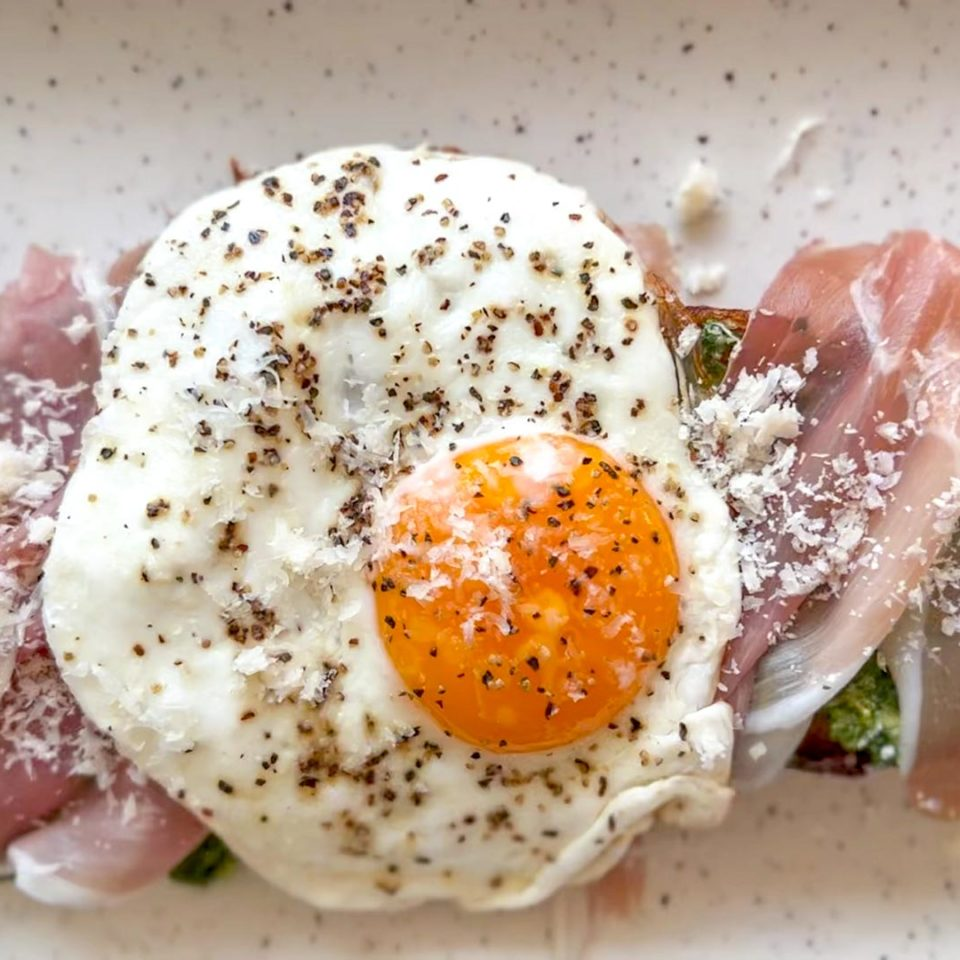

Arugula Pesto and Egg Toast

A dreamy delight that will make you forget
all about your avocado toast.
Arugula Pesto with a Fried Egg on Toast is a simple yet satisfying brunch dish
featuring fresh arugula
This dish combines the bright and spicy flavors of the pesto
with the richness of the egg for a delicious meal.
Ingredients
- 2 cups baby arugula
- 1/2 cup parmesan, plus more for finishing
- 3 tablespoon pine nuts
- 1/2 cup olive oil
- 2 cloves garlic
- salt, black pepper, red pepper flakes to taste
- 2 slices prosciutto
- 1 large egg
- 1 tablespoon butter
- 1 tablespoon olive oil (for toasting)
- 1 slice of sourdough bread
Steps:
- Make your pesto: in a food processor or magic bullet, blend the arugula, parmesan,
pine nuts, olive oil and garlic. Once blended, give it a taste test and adjust accordingly.
Some people prefer more/less garlic, saltiness etc. so give it a taste test before you call it done.
- Coat the bread in olive oil and crisp in a sauté pan for 2-3 min per side on medium heat.
Once browned, remove from heat. In same pan, heat butter. Cook egg to your liking.
Season with salt and pepper.
- Spread as much pesto as you like on the toast and then add your pieces of prosciutto.
Top with fried egg, red pepper flakes and some parmesan. Enjoy!